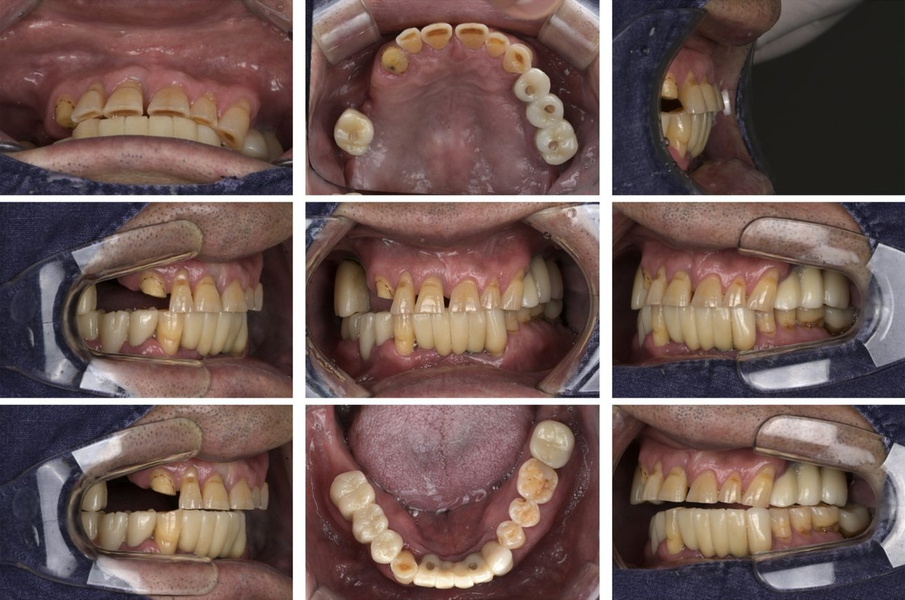
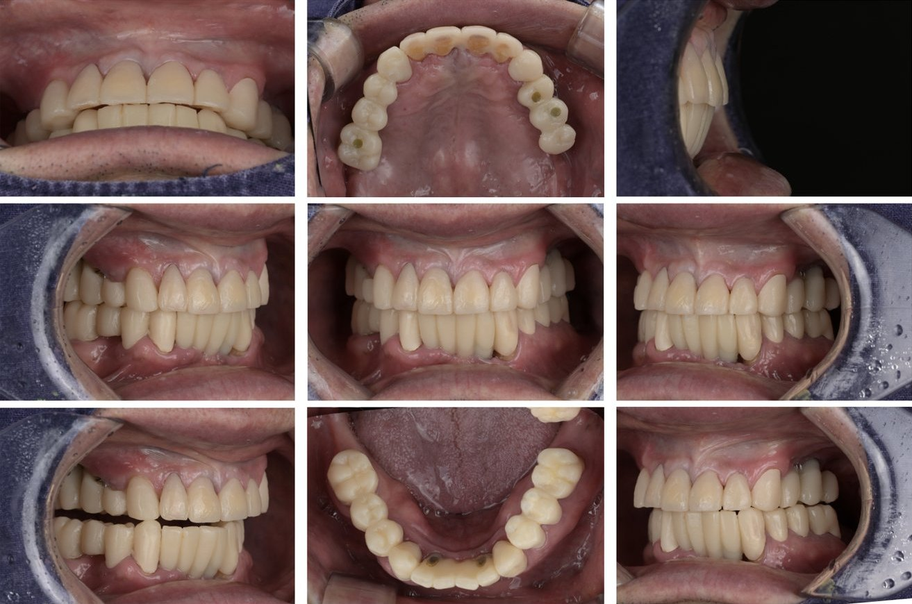
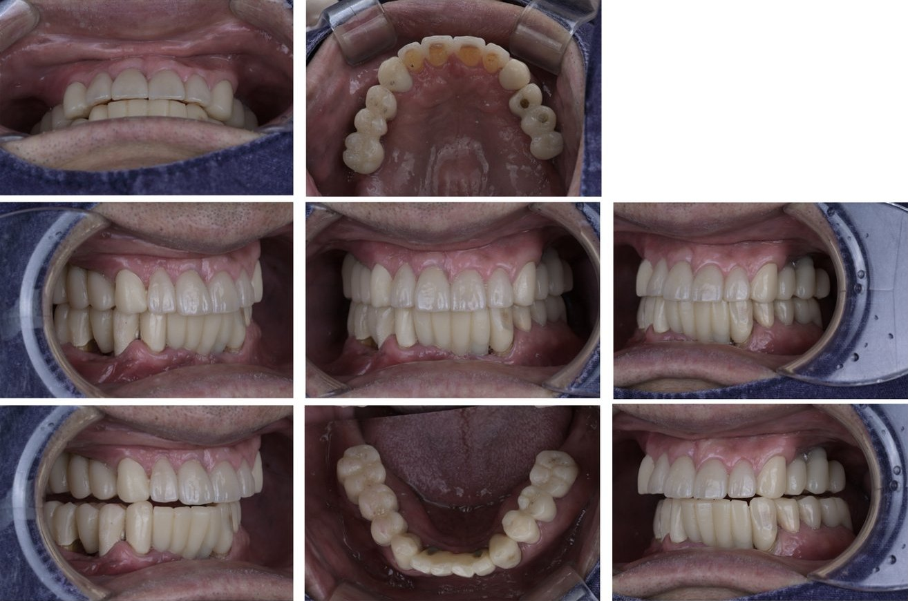
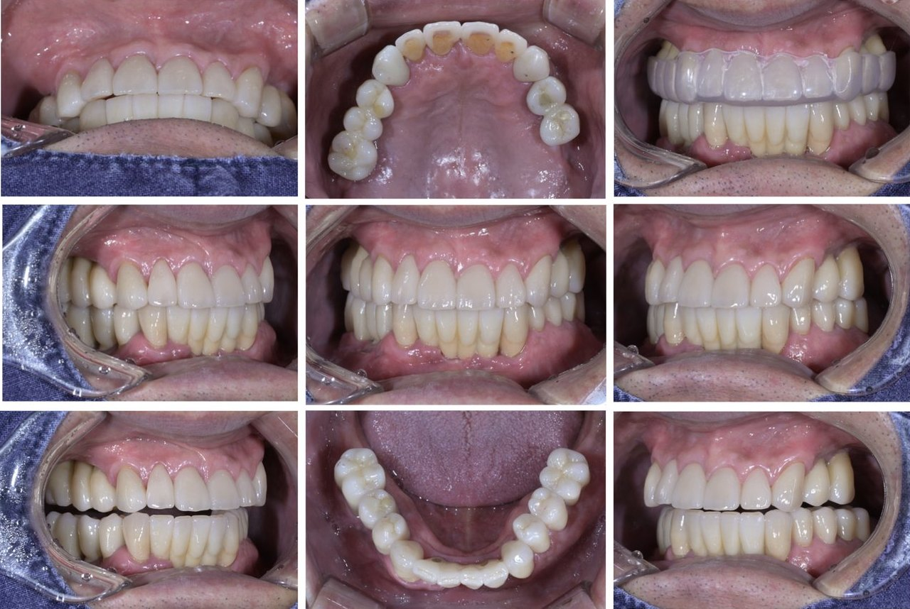

CASE · 치료 전부터 최종 보철까지
치료 과정 이야기 보기-

01치료 전
-

021차 임시 보철
-

032차 임시 보철
-

04최종 보철
사진을 누르면 크게 볼 수 있습니다. 환자분의 동의를 받아 게재한 실제 치료 사례이며, 치료 결과는 개인의 구강 상태에 따라 다를 수 있습니다.
SIGNS
이런 경우라면
전체 교합을 살펴봐야 합니다
치아는 서로 맞물려 힘을 나눠 받습니다. 그래서 몇 개의 치아가 무너지면 나머지 치아가 그 힘을 대신 받게 되고, 시간이 지나면 문제가 입안 전체로 번집니다. 아래와 같은 경우라면 불편한 치아 하나만이 아니라 맞물림 전체를 함께 확인하는 것이 좋습니다.
- 치아가 전반적으로 많이 닳아 짧아졌다
- 오래된 보철물이 여러 개이고, 자꾸 깨지거나 빠진다
- 어금니가 없어 앞니로 씹게 된다
- 앞니 사이가 점점 벌어지거나 앞으로 나온다
- 씹을 때 편한 자리가 없고, 턱이 쉽게 피곤하다
- 이를 갈거나 꽉 무는 습관이 있다
WHY IT MATTERS
무너진 맞물림은
저절로 돌아오지 않습니다
어금니를 잃거나 치아가 많이 닳으면, 위아래 치아가 물리는 높이(수직고경)가 조금씩 낮아집니다. 남은 치아에 힘이 몰리면서 더 빨리 닳고, 앞니가 밀려 벌어지기도 합니다. 얼굴 아래쪽이 짧아 보이거나 입가 주름이 깊어지는 것도 이런 변화와 관련이 있습니다.
이 상태에서 문제가 된 치아만 하나씩 씌우면, 낮아진 높이와 틀어진 맞물림을 그대로 따라가게 되어 새 보철물도 같은 이유로 다시 깨지거나 닳기 쉽습니다. 그래서 전악보철은 개별 치아가 아니라 맞물림 전체를 먼저 진단하는 데서 시작합니다.
LIKE REBUILDING A HOME
전악보철은
아파트 재건축과 닮았습니다
건물을 짓고 오래 살다 보면 전기와 수도 공사가 필요할 때도 있고, 냉난방이나 엘리베이터, 유리와 문, 타일을 바꿀 때도 있습니다. 그렇게 10년, 20년, 30년 동안 문제가 생기는 곳을 그때그때 고치며 살다 보면, 언젠가는 부분 수리로는 해결이 안 되고 건물 전체를 다시 짓는 재건축이 필요한 때가 옵니다.
입안도 마찬가지입니다. 영구치가 나온 뒤 충치를 때우고, 범위가 크면 인레이나 온레이를, 때로는 신경치료와 크라운을 하고, 치아를 잃으면 브릿지나 임플란트를 합니다. 그렇게 하나둘 치료를 받다 보면 어느새 대부분의 치아가 치료를 받은 상태가 됩니다. 문제는 이 치료들이 한 번에 계획된 것이 아니라 그때그때 문제가 생긴 곳만 고친 것이라, 범위는 크고 개수는 많은데 서로 조화를 이루지 못하는 상태에 이르기도 한다는 점입니다.
재건축처럼 전악보철도 기간이 오래 걸리고, 앞 단계가 제대로 되지 않으면 다음 단계로 넘어갈 수 없습니다. 그래서 위드치과보철과는 단계마다 충분히 확인하며 차근차근 진행합니다.
- 01 안전 진단 교합 진단건물이 오래되면 먼저 안전 진단으로 정말 재건축이 필요한지, 아직은 고쳐 쓸 만한지를 판단합니다. 입안도 치료 범위가 크다고 바로 전체 보철에 들어가지 않습니다. 맞물림과 턱관절, 잇몸과 뼈, 남아 있는 치아와 보철물을 하나하나 살펴 전체를 다시 지어야 하는 상태인지, 부분 치료로 충분한 상태인지를 먼저 가립니다. 엑스레이 몇 장과 몇 분의 검진만으로는 이 진단이 나오지 않습니다.
- 02 설계도 · 사업 승인 치료 계획 수립최종 목표를 정하고 설계도를 그리는 단계입니다. 맞물림 높이와 모양을 진단 왁스업으로 먼저 만들어 보고, 필요하면 목업으로 입안에서 미리 확인합니다. 계획이 세워져야 치료 기간과 비용도 구체적으로 설명드릴 수 있습니다. 충분한 시간을 들여 상담하고, 치료를 진행할지는 그다음에 함께 결정합니다.
- 03 철거와 착공 임시 보철 단계이제 비로소 기존 보철물과 치아에 손을 댑니다. 1차, 2차, 필요하면 3차 임시 보철을 거치며, 보철이 들어갈 치아마다 필요한 신경치료와 충치 치료, 잇몸 치료를 마칩니다. 동시에 새 높이와 맞물림이 교합적으로, 잇몸 건강 면에서, 힘의 분산 면에서 적절한지 실제로 생활하시며 오랜 기간 충분히 평가하고 다듬습니다.
- 04 준공과 입주 최종 보철 완성앞의 과정을 모두 충분히 거친 뒤, 임시 보철에서 확인한 높이와 모양을 그대로 옮겨 최종 보철을 완성합니다.
- 05 유지 보수 정기 검진과 관리새로 지은 건물도 관리가 필요하듯, 정기적으로 맞물림과 보철물, 잇몸 상태를 확인합니다. 이갈이나 이 악물기가 있다면 보호 장치(나이트가드)로 오래 지킵니다.
1993
오래 쓰는 보철은, 오래 지켜보는 곳에서
전악보철은 끝난 뒤의 관리가 결과만큼 중요한 치료입니다. 위드치과보철과는 1993년부터 지금의 자리에서 가족이 대를 이어 진료하고 있습니다. 같은 자리에서, 같은 기록을 바탕으로 오래도록 책임지고 관리해 드리겠습니다.
OUR PRINCIPLE
서두르지 않고,
확인하면서 단계를 밟아 갑니다
깎기 전에 먼저 보여드립니다
진단 왁스업과 목업으로 새 치아의 높이와 모양을 미리 만들어, 깎기 전에 입안에서 직접 확인합니다.
임시 보철로 충분히 적응합니다
새 높이와 맞물림을 임시 보철로 먼저 써 보며 씹기, 발음, 턱의 편안함을 확인하고 필요한 만큼 다듬습니다.
확인된 그대로 옮깁니다
임시 보철에서 검증한 높이와 모양을 최종 보철에 그대로 옮겨, 예측 가능한 결과를 만듭니다.
빠르게 끝내면, 빠르게 무너집니다.
모든 치료가 그렇지만, 전악보철 수복 치료는 더더욱 속도가 중요하지 않습니다. 빠른 치료보다 바른 치료로, 결과가 오래가는 치료를 추구합니다.
CASE · STORY 01
무너진 맞물림을, 세 번의 임시 보철로 다시 세우다
위아래 전체 · 전악보철 수복 · 교합 재건
오랜 세월 동안 그때그때 받아 온 보철물들이 여러 개 남아 있었고, 남은 치아는 많이 닳고 깨져 있었습니다. 앞니 사이는 벌어지고 위아래 치아가 고르게 맞물리지 못해, 한두 개를 고쳐서는 해결되지 않는 상태였습니다. 재건축으로 치면 안전 진단에서 전체를 다시 지어야 한다는 결과가 나온 셈입니다.
그렇다고 무작정 치료에 들어가지는 않았습니다. 원인을 파악하지 못하면 치료의 방향을 제대로 잡을 수 없기 때문입니다. 교합 진단을 바탕으로 치료 계획과 설계를 오랜 시간 고민했고, 환자분과 충분히 대화를 나누며 최종 치료 계획을 세웠습니다.
치료는 바로 최종 보철로 가지 않고 임시 보철부터 시작했습니다. 살릴 수 있는 치아는 살리고, 필요한 부위에는 임플란트를 심었습니다. 1차 임시 보철로 새 높이와 맞물림을 세우고, 2차에서 모양과 맞물림을 다듬었으며, 3차에서 최종 보철로 옮길 형태를 실제 생활 속에서 다시 확인했습니다.
단계마다 씹기와 발음, 턱의 편안함을 확인하고 다음으로 넘어갔습니다. 서두르지 않고 확인한 만큼, 결과는 예측 가능하고 오래갑니다.
환자분의 동의를 받아 게재한 실제 치료 사례입니다. 치료 결과는 개인의 구강 상태에 따라 다를 수 있습니다.
RE-TREATMENT
보철 재치료는
실패한 원인을 찾는 데서 시작합니다
보철물이 자꾸 깨지거나 빠지고, 잇몸이 붓거나 안쪽에 충치가 생겼다면 겉의 보철물만 새로 바꿔서는 같은 문제가 반복되기 쉽습니다. 무너진 이유가 맞물림인지, 이갈이 같은 습관인지, 보철물 가장자리의 충치나 잇몸 문제인지 먼저 찾습니다.
원인을 바로잡은 뒤에 다시 만들어야 새 보철물이 같은 이유로 실패하지 않습니다. 원인이 한두 개 치아에 그친다면 그 부분만 다시 치료하고, 맞물림 전체가 무너졌다면 전악보철로 계획합니다.
교정과 함께
기울거나 벌어진 치아는 교정으로 먼저 위치를 바로잡으면 깎는 양을 줄일 수 있습니다. 치과교정과 전문의와 처음부터 함께 계획합니다.
잇몸 · 임플란트와 함께
잇몸 상태를 먼저 안정시키고, 빠진 어금니는 임플란트로 지지를 되찾아 앞니에 몰리던 힘을 나눕니다. 필요하면 미세치주성형을 함께 진행합니다.
FAQ
자주 묻는 질문
치료 기간은 얼마나 걸리나요?
전악보철은 최소 6개월 이상 걸립니다. 치아 상태와 필요한 기초 치료, 임시 보철 단계의 평가 기간에 따라 더 길어질 수 있습니다. 재건축처럼 앞 단계가 충분히 마무리되어야 다음 단계로 넘어갈 수 있어, 앞 단계가 길어지면 전체 기간도 길어집니다. 빠르게 완성하면, 빠르게 무너집니다. 그래서 위드치과보철과는 빠른 치료가 아니라 오래가는 치료를 추구합니다. 정밀 검사 후 개인별 일정을 안내해 드립니다.
모든 치아를 다 씌워야 하나요?
아닙니다. 맞물림을 다시 세우는 데 꼭 필요한 치아만 치료하며, 건강한 치아는 최대한 그대로 둡니다. 손상 정도에 따라 크라운뿐 아니라 오버레이나 라미네이트처럼 덜 깎는 방법도 함께 사용합니다.
치아 높이를 올리면 턱이 아프지 않나요?
그래서 바로 최종 보철을 하지 않고, 새 높이를 담은 임시 보철로 충분히 적응하는 기간을 둡니다. 이 기간 동안 턱관절과 근육, 씹기와 발음이 편안한지 확인하고, 필요하면 조정한 뒤 최종 보철로 옮깁니다.
한 번에 모두 치료하나요, 나눠서 하나요?
입안 상태와 생활 일정에 따라 한 번에 진행하기도 하고, 부위를 나눠 단계적으로 진행하기도 합니다. 어느 쪽이든 처음에 정한 전체 계획을 기준으로 맞물림이 어긋나지 않게 진행합니다.
이를 갈거나 꽉 무는 습관이 있어도 괜찮나요?
이갈이나 이 악물기는 보철물이 깨지는 흔한 원인이라 진단 단계에서 꼭 확인합니다. 습관이 있다면 재료와 설계를 그에 맞게 정하고, 치료 후에는 잘 때 끼우는 보호 장치(나이트가드)를 권해 드립니다.
오래 쓰려면 무엇이 중요한가요?
정기 검진에서 맞물림과 보철물, 잇몸 상태를 확인하는 것이 가장 중요합니다. 맞물림은 시간이 지나며 조금씩 달라질 수 있어, 작은 변화를 일찍 바로잡으면 보철물을 훨씬 오래 쓸 수 있습니다.
한눈에 보기
- 어떤 치료인가요
- 많이 닳았거나 여러 개가 무너진 치아의 높이와 맞물림을 전체적으로 다시 설계해 보철로 회복하는 치료
- 이런 분께
- 치아 마모가 심한 분, 오래된 보철물이 여러 개인 분, 어금니 상실로 맞물림이 무너진 분, 보철물이 반복해서 깨지는 분
- 치료 과정
- 교합 진단 → 치료 계획 수립 → 임시 보철 단계(1·2차, 필요 시 3차) → 최종 보철 → 정기 관리
- 치료 기간
- 최소 6개월 이상. 빠른 치료보다 오래가는 치료를 추구하며, 진단 후 개인별 일정을 안내합니다.
- 담당 의료진
- 배민수 원장 (치과보철과 전문의, 대한턱관절교합학회 인정의). 필요하면 교정 · 치주 전문의와 협진
무너진 맞물림,
처음부터 다시 정확하게 진단받아 보세요.
위드치과보철과는 예약제로 운영됩니다.